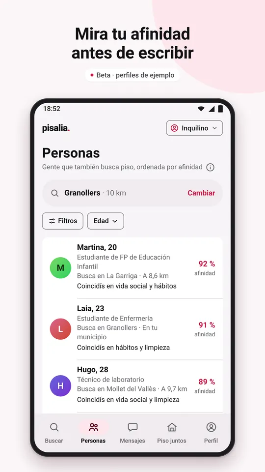
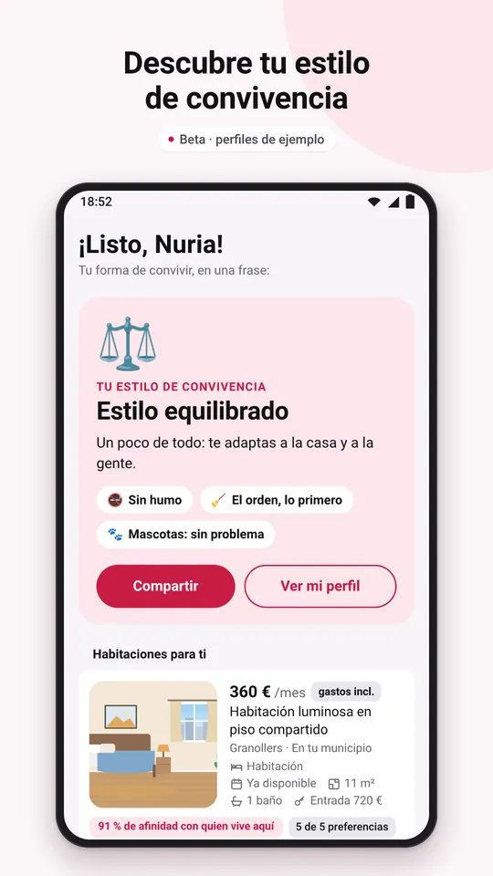
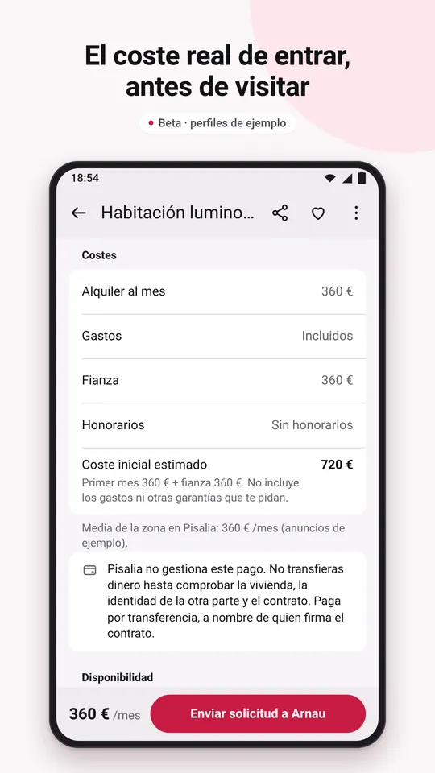
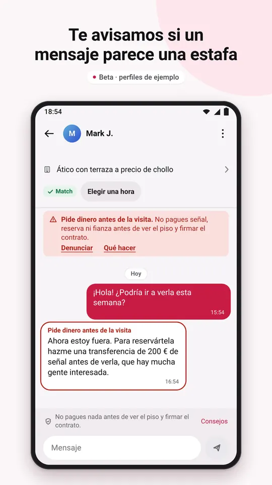
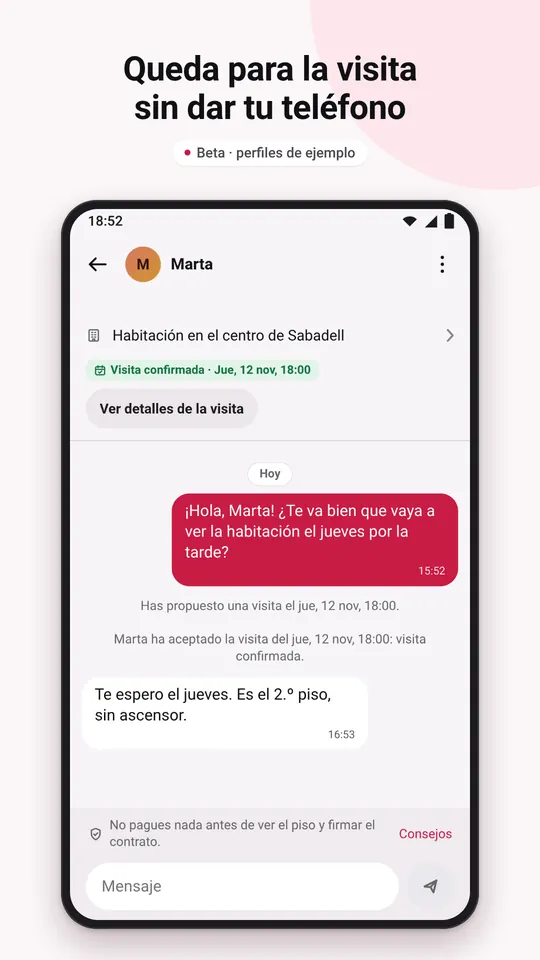
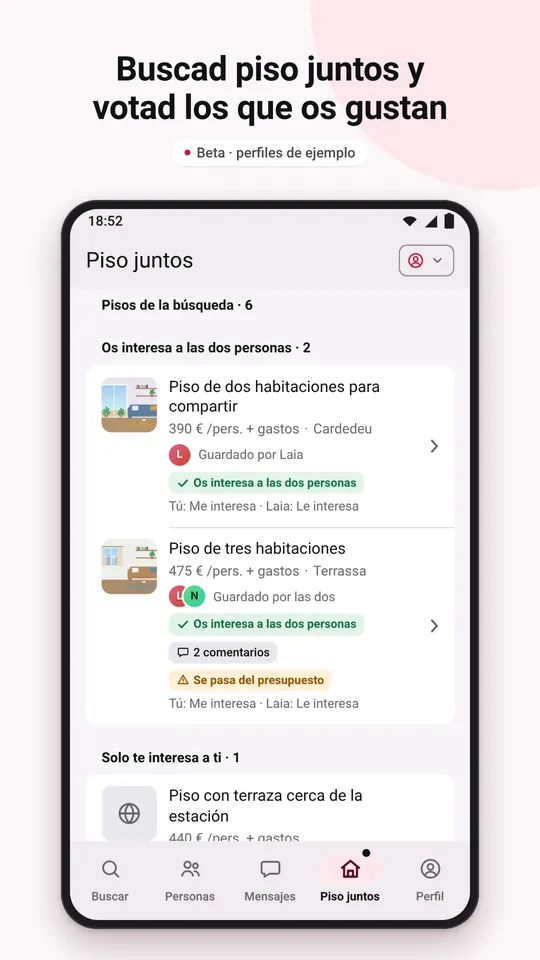
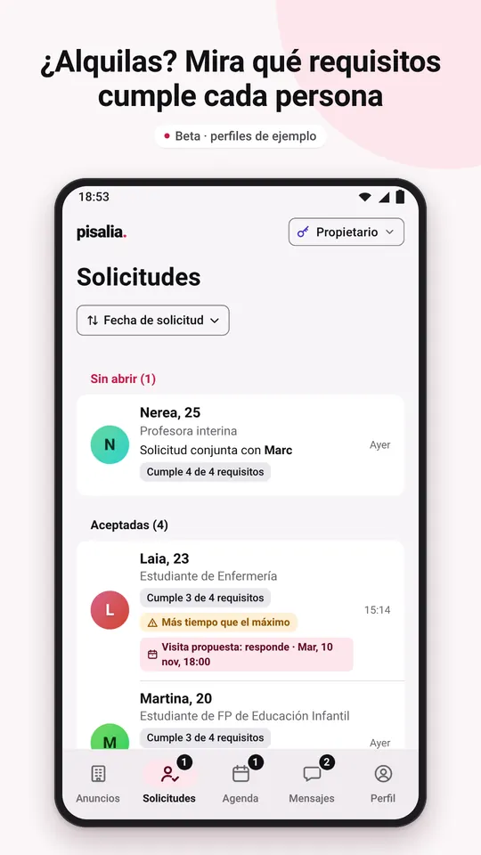
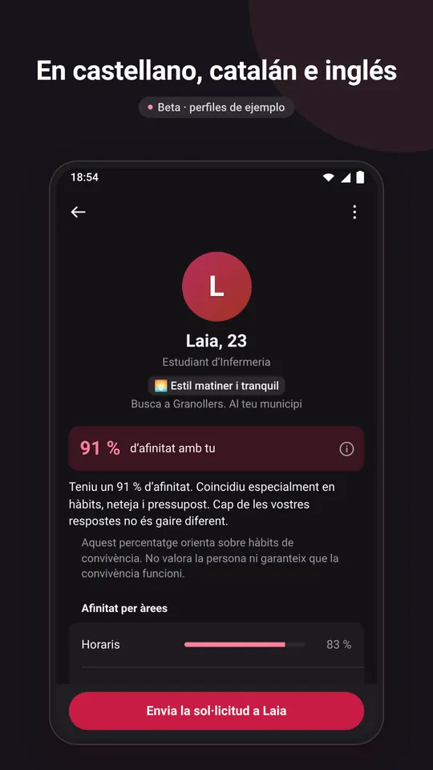

La app para compartir piso
Encuentra habitación y gente con la que convivir bien
Haz el test de convivencia y mira tu afinidad con cada persona antes de escribirle. Para gente de 18 a 30 años que busca habitación o a alguien para su piso. Empezamos por Cataluña.
- Gratis y sin publicidad
- En castellano, catalán e inglés
- Solo para mayores de 18 años
Próximamente en Google PlayPrimero en Android. En iPhone, más adelante.
Quiero probar la betaPronto abriremos una prueba cerrada en Android para mayores de 18 años en España: escríbenos y te avisamos.

Pisalia está en beta. Los demás perfiles y anuncios son de ejemplo, las comprobaciones son simuladas y tus datos se guardan solo en tu móvil: Pisalia todavía no tiene servidores.
Cómo funciona, en 3 pasos
- Elige qué buscas. Una habitación, personas para compartir piso, alguien para la habitación libre de tu piso o inquilinos para tu piso.
- Haz el test de convivencia. 12 preguntas y una opcional sobre horarios, orden, limpieza, visitas, ruido, mascotas o presupuesto. Marca lo que es muy importante para ti y lo que te da igual.
- Mira tu afinidad y escribe. Cada persona sale con vuestra afinidad y lo que tenéis en común, y cada anuncio, con cuántas de tus preferencias cumple. Envía una solicitud: si la aceptan, hacéis match y se abre el chat.
Para quien busca y para quien anuncia
Si buscas habitación o compañeros de piso
- Personas que buscan piso cerca de ti, con vuestra afinidad y lo que tenéis en común.
- Habitaciones en lista o en el mapa, con filtros por requisitos y preferencias.
- El coste real de entrar en cada anuncio: alquiler, gastos, fianza y coste inicial estimado. Lo que falta sale como «No indicado».
- Visitas: elige una de las horas que ofrece quien anuncia o propón otra.
- Piso juntos: con alguien con quien tienes match, buscad piso con vuestro presupuesto y zonas, votad los pisos, comentadlos y enviad una solicitud conjunta.
Si alquilas una habitación o un piso
- Publica tu habitación o tu piso con fotos. Ponlo en pausa, renuévalo o márcalo como alquilado.
- Mira a cada candidato con su afinidad y los requisitos que cumple, y acéptalo o recházalo.
- Agenda: ofrece las horas en que se puede visitar el piso y organiza las visitas.
- Al publicar, la app no deja pedir lo que la ley no permite cobrar al inquilino, como los honorarios de la agencia.
Así es Pisalia
Capturas de la app en Android, con perfiles y anuncios de ejemplo de la beta.







Seguridad y confianza
Avisos contra estafas en el chat
El chat te avisa si un mensaje se parece a una estafa típica, como pedir dinero antes de la visita, o si vas a enviar un DNI, un IBAN o una tarjeta.
Lista de seguridad antes de pagar
Seis comprobaciones que marcas tú antes de pagar nada, con un consejo para cada una.
Denunciar y bloquear
Desde cualquier perfil, anuncio o chat, sin avisar a la otra persona. En la beta, las denuncias se quedan en tu móvil y todavía no las revisa nadie: si quieres que veamos una, puedes enviárnosla por correo.
Revisión de los anuncios
Cuando Pisalia tenga servidor, una persona revisará cada anuncio antes de publicarlo. En la beta, los anuncios que ves son de ejemplo y los tuyos se quedan en tu móvil.
Pisalia no cobra ni gestiona pagos
Ni alquileres, ni fianzas, ni señales. No pagues nada sin haber visto el piso y firmado el contrato.
Tu teléfono, para ti
Habláis por el chat de Pisalia y quedáis para la visita sin dar el número.
Lee los consejos contra las estafas de alquiler.
Tus datos
En la beta, lo que pones en la app se guarda solo en tu móvil. Pisalia no tiene publicidad, y esta web no usa cookies ni analítica. Lo explica la política de privacidad.
Preguntas frecuentes
¿Cuánto cuesta?
Nada. Pisalia es gratis y no tiene publicidad.
¿Cuándo puedo descargarla?
Pisalia saldrá primero en Android, en Google Play. Pronto abriremos una prueba cerrada: si tienes un móvil Android, eres mayor de 18 años y vives en España, escríbenos a info@pisalia.app y te avisaremos cuando puedas probarla. La versión para iPhone llegará más adelante.
¿Dónde funciona?
Pisalia es para toda España, pero empezamos por Cataluña. En la beta, los perfiles y anuncios de ejemplo están en la provincia de Barcelona.
¿Qué es la afinidad?
Un porcentaje que compara vuestras respuestas al test de convivencia y tiene en cuenta lo que cada persona marca como muy importante. Te explica lo que tenéis en común y en qué os diferenciáis. Es una orientación, no una garantía.
¿Qué es Piso juntos?
Si has hecho match con alguien y queréis compartir piso, podéis buscar a la vez: con vuestro presupuesto, zonas y fechas, guardáis pisos, los votáis, los comentáis y enviáis una solicitud conjunta a quien anuncia.
¿Pisalia cobra o gestiona el alquiler?
No. Pisalia solo pone en contacto a las personas: no cobra ni gestiona alquileres, fianzas ni señales, y no es parte del contrato.
¿Quién puede usarla?
Solo mayores de 18 años. Está pensada sobre todo para gente joven que estudia o trabaja y busca habitación o compañeros de piso.
¿Cómo borro mi cuenta?
En la app: Perfil → Eliminar mi cuenta. Si ya no tienes la app, puedes pedirlo por correo: lo explicamos en Borrar tu cuenta.
¿Más dudas? Mira el soporte o escríbenos a info@pisalia.app.
¿Quieres probarla antes que nadie?
Escríbenos a info@pisalia.app desde el correo de tu cuenta de Google y te avisaremos cuando abramos la prueba cerrada de Android.
Información y ayuda
- Política de privacidadQué datos usa Pisalia y cuáles son tus derechos
- Borrar tu cuentaDesde la app o pidiéndolo por correo, sin la app
- SoporteContacto, preguntas frecuentes y consejos de seguridad
- Condiciones de uso y normasLo que aceptas al usar Pisalia
- Datos del titularQuién es el titular de Pisalia y cómo contactar